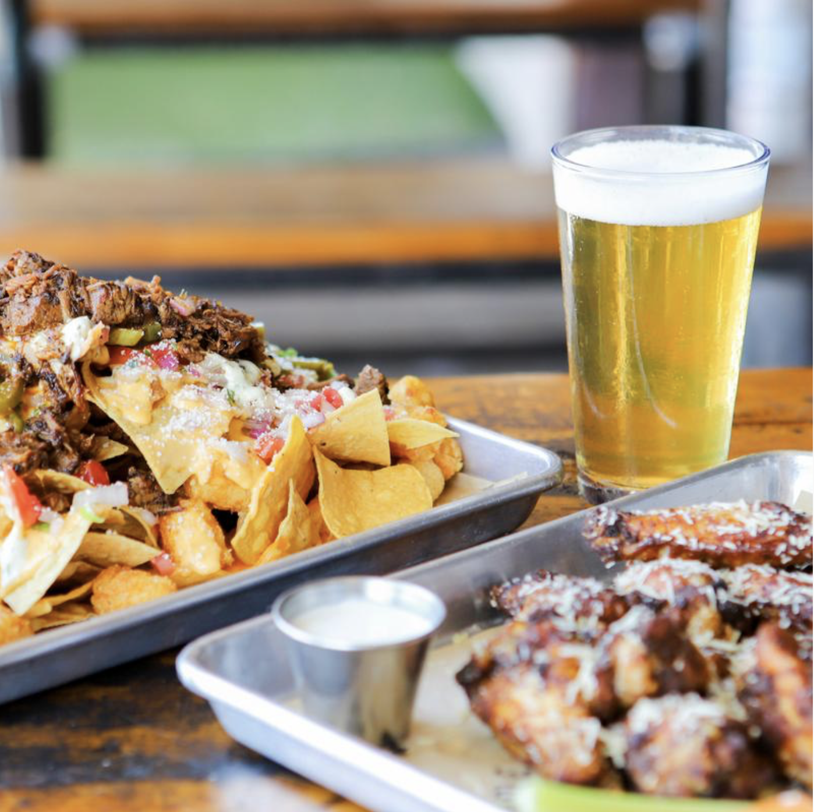

DOG RULES
Our front patio is dog-friendly and human-friendly. Dogs are only allowed on the front patio and are not allowed inside or on the back patio, with the exception of service animals. Dogs must be on a leash and well-behaved at all times, even if their owner is not. All four paws must remain on the ground at all times. Sitting on laps is not acceptable. Please make sure to have your dog go to the bathroom before bringing them onto the patio. Also, give them regular bathroom breaks. Keep your dog close to you but not on surfaces such as tables or chairs per the health department. Your canine friend can not eat off of plates or drink out of glasses. We have special ones just for them, please ask a staff member. Be sure to clean up after your dog.
 HISTORY
I'm Yonathan. I’m professional photographer living in the 'America's Finest City', San Diego. I feel so lucky to get to do what I love for the past 8 years. I feel honored to share your special moments with you. I like to keep things simple. If you like what you see in my portfolio, you’re going to love your photos. I feel honored to share your special moments with you. I like to keep things simple. If you like what you see in my portfolio, you’re going to love your photos. I feel honored to share your special moments with you. I like to keep things simple. If you like what you see in my portfolio, you’re going to love your photos.